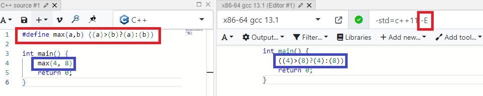

C++ compilation
From a source to executable file
Interpreted vs Compiled Programming Languages
Compiled
converted directly into machine code that the processor can execute
tend to be more faster and efficient
more control over hardware aspects (like memory management)
Note: possibility of combination both approaches - translation to intermediate form (like C# or Java)
Interpreted
interpreter, reads and executes the code
no worry about memory management (but can be forced)
in general slower
- In c++ notebooks "interpreted C++"
Most popular compilers
GCC(GNU Compiler Collection)
gcc for C and g++ for C++, other languages also supported
the standard compiler for Linux kernel
Clang
LLVM as a backend (intermediate representation before assembler code)
fast compiles and low memory use
many optimizations
MSVC Compiler
compiler for the C, C++, C++/CLI
part of Visual Studio
Windows os
C++ compilation model
Preprocessing
Analysis and code generation
Linking
Preprocessing
Replacing #include directive with the content of indicated files
Resolving macros (#define instructions)
-E flag for GCC, Clang

Analysis and code generation
Checking code correctness (syntax and semantics)
Optimizations
binary size
removing not reachable code
controlled by -O flag (in a basic scenario)
realized by analysis AST tree
assembler code generation
machine code generation
generation objects files (*.o)
- syntax - spelling and punctuation errors
- semantics - types, castings
- -S flag for gcc to see assembler code
- object file similar to executable but without reference to external symbols, independent, -o switch for gcc
- AST - abstract syntax tree
Linking
Combining object files into executables/libraries
optimizations (LTO)
Can be ended with linker error, like undefined symbol or ambiguous definition error
- LTO - making some functions inline, moving some blocks closer
Sum-up of compilation model
Libraries and executable
Object file (*.o) - a binary file, input for linking processStatic library(*.lib) - a binary file, that groups many object files, added to exe during linking (a copy for each executable)Shared(dynamic) library(*.so,*.dll) - a binary file, similar to static lib, loaded during runtime, one instance can be shared by many executableExecutable(*.exe, *[.out]) - can be launched in os environment, uses shared/static libs underneath
An example command, more details in the second day
g++ main.cpp -o hello.out./hello.outHello Intel!
Frame on the stack
The stack consists of stack frames (1 function - 1 frame)
The details are determined by ABI, but a frame consist of:
arguments passed to the function
return address to caller function
local variable space
If we go out scope, the memory is deallocated
Stack overflow
Segmentation fault
Stack properties
FILO - First in Last Out
very fast access (via stack pointer)
limited memory (os- and compiler- dependent)
continuous memory
automatic memory management
memory size known and allocated during compilation
- stack pointer - small register to store address of the last element on the stack
Head allocation
both custom and basic types objects can be allocated on the heap
Pointer (p) to the memory is allocated on the stack!
sizeof(Foo) bytes are allocated on the heap
address of the memory is assigned to the pointer p
we have to release the memory manually (delete)
Heap properties
slower access to the memory
no memory limits (only hardware limitations)
memory can be fragmented
manual memory management
Use smart pointers to memory management!
Compilation on Windows - via command line
Option 1 - environment in an existing command prompt window
Call vcvars64.bat script dedicated for your Visual Studio version
Option 2 - open Visual Studio Developer Command Prompt
Compilation on Windows - via command line
Call compilation via cl.exe program
Execute the program
cl.exe and link.exe can be used separately, but any linking options specified to cl will be translated into options for the linker
Windows recognizes either a slash or a backslash as a valid path separator, so *nix-style paths can be used as well
Compilation on Win - using Visual Studio IDE
Create the project
Build the solution
Start the program
Compilation on Win - using Visual Studio IDE cd
Build the solution
Start the program
Other options for Windows
MinGW for Linux (gcc for Windows)
WSL - Windows Subsystem for Linux
Virtual Machine (VirtualBox for free)
dual boot
GCC compilation with external dependencies - example
g++ main.cpp -I/home/mbencer/ov_install/release/runtime/include
-L/home/mbencer/ov_install/release/runtime/lib/intel64 -lopenvino -o test_ovNote that we should tell also the loader where to find openvino library (via rpath where lib has to be installed in the fixed location or LD_LIBRARY_PATH)
LD_LIBRARY_PATH=/home/mbencer/ov_install/release/runtime/lib/intel64 ./test_ov
CMake automation
industry standard
cross-platform
build automation, testing, packaging and installation
compiler-independent
CMake is not a build system itself; it generates another system's build files (like Makefiles for Linux)
CMake example - OpenVINO
Clone repo and create the build folder (mkdir build )
Run CMake generator
Run building